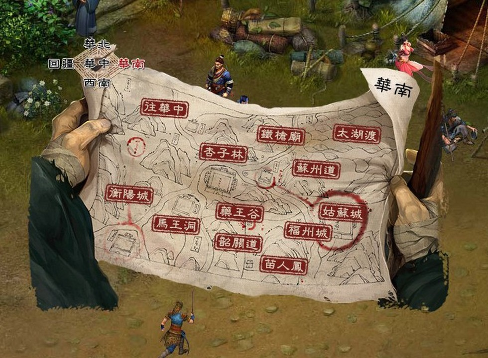

金群开局三幻神？老玩家泪目：当年选这仨队友
兄弟们，你们有没有过这种体验？小时候觉得贼好玩的游戏，二十年后想重温一下，结果开局没走两步，就被自己当年的“经验”给狠狠打脸了。

说出来不怕你们笑话，我前阵子翻出《金庸群侠传》想找找青春，开局主角身上就一个野球拳等级低得可怜，口袋里叮当响买不起药，想着先收个强力队友带飞。结果照着记忆里的“大神路线”走，反复重开了四五次，越玩越憋屈，差点被开局这几个队友整得直接卸载。所以今天必须得跟大伙好好盘盘，开局那三位看着像“神”，实际用起来贼“坑”的队友，究竟是怎么把我这老脸给打肿的。
先唠高升客栈那个白给的段誉。当年觉着这简直是天上掉馅饼，天龙八部的主角光环加持，不要白不要。可兄弟们你们算过账没？开局那点经验丹和练功资源紧巴巴的，全喂给这位爷，好不容易把等级和武功拉起来，结果剧情一推到燕子坞，这货见了王语嫣直接走不动道，当场强制离队，你喂进去的所有资源瞬间清零，连个响都听不见。这哪是白送福利，这是策划给咱挖的“负资产”大坑。从游戏心理学的角度琢磨，当年国产单机特别喜欢用这种“情感背叛”机制来制造戏剧冲突，段誉的离队不光是少个战力，更是对你前期“养成投入”的毁灭性打击。说白了，这设计就是要让你二周目不敢再养他，逼着你换人培养，粗暴地给游戏增加所谓的“重复可玩性”，放现在这种摧毁玩家心血的设定，估计早被骂上热搜了。
如果说段誉是温柔的陷阱，那胡斐就是纯纯的“看得见吃不着”的扎心代表了。成型后的胡斐确实猛，胡家刀法一旦练满，那伤害数字看着就舒坦，单挑群战都是一把好手，还是拿天书的关键人物。可你倒是先告诉我，怎么让他入队？得去阎基居干翻那个会下毒的阎基，拿到两页刀谱才行。问题在于刚开局的主角，野球拳跟挠痒痒似的，身上连件像样的护甲都没有，去单挑阎基那不是送人头吗？你只能眼睁睁看着这位后期战神坐在胡斐居里，死活拉不动。这种“先打Boss再收队友”的线性隐藏逻辑，对没攻略的新手简直是地狱难度。说白了，这玩意就是当年攻略本经济下的产物，策划故意设个硬门槛卡你，逼你去买杂志看攻略，或者跟同学课间疯狂交流打法，跟现在游戏里恨不得手把手教你点哪儿的保姆指引完全不是一个物种。
胡斐的坑好歹还能靠后期练级弥补，但最后这位“女神”级别的坑，那是能让整个开荒计划直接流产的元凶。王语嫣强不强？强得离谱，全队攻防直接翻倍，有她没她打Boss完全是两个难度。可你瞅瞅入队条件，得跑遍好几个地图，解锁一大串前置剧情，还得先收段誉再等他在燕子坞离队，就开局那零装备、零武功、零道德的三零状态，等你把这尊大神请出来，开荒的黄金时间全浪费在跑图上了，别人田伯光流都砍穿好几个村子了，你还在为路上的小兵发愁。不过咱们换反向视角琢磨一下，段誉、胡斐、王语嫣这三个其实代表着三种“长线投资”，可在《金群》这套道德值影响结局、资源极度匮乏的系统里，长线投资往往就是最大的风险。甚至可以说，坑你的不是这三个队友，而是玩家自己的“功利心”。就因为看中后期强度，完全忘了《金群》开局本质是个生存游戏。胡斐后期再神，你前期打不过阎基就是零；王语嫣再逆天，你走不到燕子坞全是空谈。要是能放下攻略喂到嘴边的“最优解”执念，段誉前期那点战力足够帮你啃下几个小Boss，他离队虽然带走经验，但也腾出位置让你早点去收虚竹，只是咱们舍不得那点沉没成本，才越玩越觉得亏得慌。
说完了这几个坑，其实回头看看，当年能绕过这些坑直奔田伯光居的，那都是老油条了。而且现在琢磨起来，咱们重温老游戏觉得别扭，真不一定全是策划的锅。现在的玩家习惯性打开手机查攻略、找最优解，开局就被“后期强度”四个字绑架，反而把《金庸群侠传》最精髓的“机缘巧合”给弄丢了。这游戏最大的魅力从来就不是数值碾压，而是在瞎逛中误打误撞的惊喜，比如空挥野球拳升级的枯燥与期待、拿左右互搏术需要的那点心眼子、道德值忽高忽低带来的剧情走向变化。如果开局每一步都按着攻略算计得失，非得凑齐所谓的后期神阵，那这开放江湖直接让你玩成了打工模拟器，跟游戏本身倡导的自由探索精神完全是背道而驰。说白了，当年咱们啥攻略没有，乱练武功、乱收队友，反而玩得废寝忘食；现在信息爆炸了，老玩家重温时却越玩越累，总觉得处处是坑，这不挺讽刺的吗。
所以啊，重温老游戏，有时候真别信什么“开局必收”的鬼话。那些让你开荒血压飙升的“坑货”队友，其实恰恰构成了《金庸群侠传》独一无二的回忆，选错了人，走错了路，被NPC按在地上摩擦，这些折腾本身反而比一路平推更让人记到现在。不知道各位老江湖，你们当年开局第一件事是去高升客栈领段誉，还是去田伯光居找那只淫贼呢？
关于我们
📱 公众号名称：三天游戏
✍️ 作者：曾三天
扫码关注公众号，获取每日最新资讯

商务合作与版权
商务合作 / 内容投稿 / 品牌推广
请关注公众号「三天游戏」后台留言联系
版权声明：本文由作者整理，转载需注明出处。